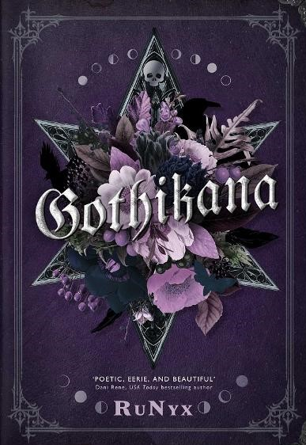

Gothikana
RuNyx
"If this is madness," she whispered almost against his lips, "drown me in it."
Corvina Clemm is a woman with secrets. The last thing she expects to receive is an admission letter from the University of Verenmore, a place just as secretive.
A castle atop a mountain, Verenmore is steeped in shadows, deceit and death, a place where students have been disappearing every five years for over a century. As Corvina becomes caught up in unravelling the clues to solve the mystery, her path collides with Vad Deverell, her enigmatic professor.
Vad, too, is a man with secrets. And he cannot allow Corvina to get close enough to discover what he hides. But whenever she is near, his heart and soul yearn to possess her.
As Corvina and Vad become more and more entangled, their passion for each other could be the very thing to solve the mystery of Verenmore - or it could bring them both down in flames.